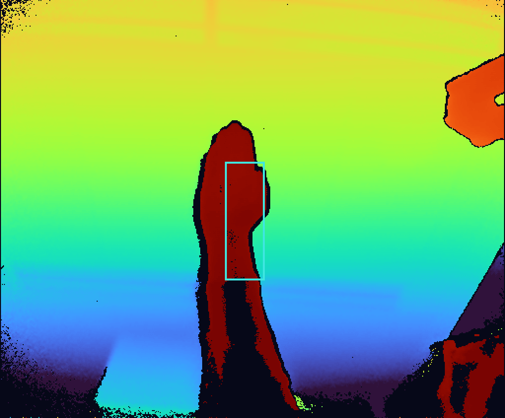

01 · DEPTH SENSING
See the chest rise and fall
A depth camera measures tiny movements of the chest and abdomen with every breath.
Contact-free respiratory monitoring · NICU
MedAxis is reimagining how premature infants are monitored for breathing — watching every breath from a distance, with no adhesives on fragile skin.
Why we started
0grams
Born at 24 weeks — almost four months early. On day 12: wires on the chest, a sensor on the foot.
The baby had apnea of prematurity, where breathing pauses because the brain hasn't fully matured. Four episodes in, the care team was worried about the risk of brain injury.
Moments like this are why monitoring has to be reliable — and gentle.
How it's done today
Apnea is caught by watching oxygen saturation, heart rate and a respiratory waveform. That waveform usually comes from impedance pneumography: electrodes glued to the chest that infer breathing from electrical changes.
“These signals are noisy and inconsistent.”
The MedAxis approach
Instead of reading breathing through the skin, MedAxis watches it. Two cameras, no contact, one clearer picture of every breath.
01 · DEPTH SENSING
A depth camera measures tiny movements of the chest and abdomen with every breath.
02 · THERMAL IMAGING
A thermal camera detects the airflow of breathing at the nose.
→ TOGETHER
Combined, they aim to give clinicians a clearer view of breathing — and, soon, automated apnea alerts, respiratory rate and breathing patterns.
Progress
We're early, and we say so: our proof of concept tracks surface movement over time. It has not yet been validated on infants.
Shadowed for a full day at UNC Children's Hospital and interviewed NICU physicians and nurses about how breathing is monitored today.
Evaluated time-of-flight sensors and a Microsoft Kinect v2 depth camera.
Records depth video, lets us pick a region to analyse, and tracks how that surface moves over time — including flagging when movement stops, tested with a hand simulating breathing.
A higher-resolution depth camera with an embedded computer, thermal imaging alongside depth, and AI-assisted breathing analysis.

DEPTH · 30 FPS NEAR ← → FARTeam
Biomedical engineering students bringing together clinical insight, embedded systems and data science.
Embedded systems engineering
bbhanda@ncsu.edu
Pre-Med · Clinical connections
asma@ncsu.eduData science
assaj2@ncsu.eduData science
jgardesh@ncsu.eduContact
We'd love to hear from clinicians, engineers, mentors and anyone who wants to help us build gentler monitoring for the smallest patients.